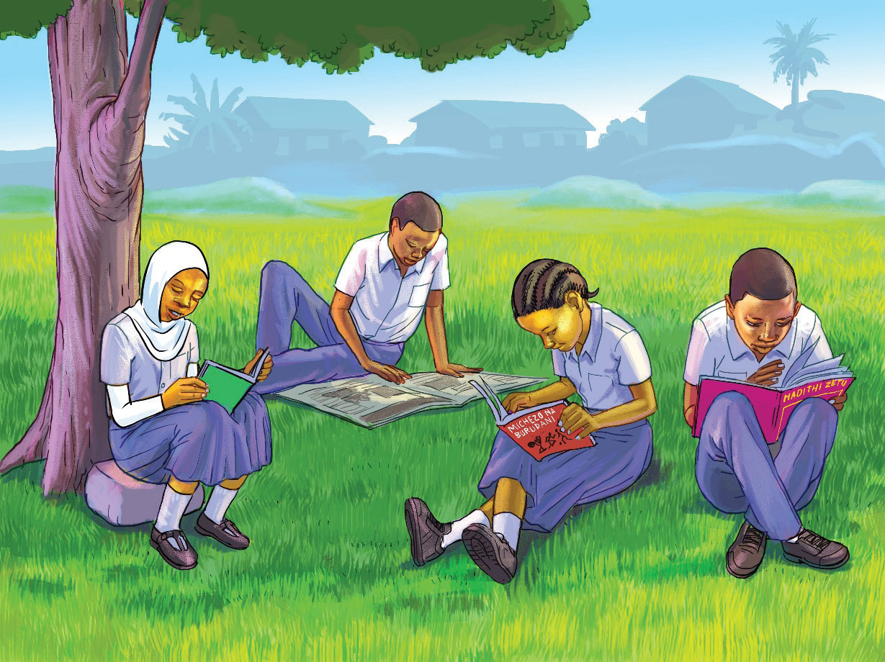

Kabula:Habari za kujisomea marafiki zangu!
Nyamizi, Mashaka na Maisha:Nzuri (Waliitikia kwa pamoja.)
Kabula:Leo nimesoma kitabu kinachohusu utamaduni wetu.Nimejifunza kwamba kila kabila katika nchi yetu lina utamaduni wake ambao huongoza maisha ya kila siku ya watu wa kabila hilo.
Nyamizi:Eeeh! Utamaduni huo ni tofauti na utamaduni tuliojifunza katika somo la Kiswahili?
Kabula:Ndiyo!Kitabu nilichosoma kimezungumzia kuhusu makabila mbalimbali yanayopatikana nchini Tanzania, vyakula vyao vya asili, nyimbo zao pamoja na shughuli nyingine za kitamaduni walizo nazo.
Mashaka:Kumbe! Leo ndiyo ninasikia kuwa kila kabila lina utamaduni wake.Nilidhani utamaduni wa Watanzania ni mmoja na unatumika katika makabila yote nchini Tanzania.Basi nitaomba uniazime kitabu hicho ili na mimi nikajisomee.
Kabula:Sawa Mashaka, nitakuazima ukajisomee mwenyewe ili uelewe zaidi kuhusu tamaduni za makabila mbalimbali yaliyopo Tanzania.
Maisha:Mimi pia ninataka niwaeleze niliyoyasoma katika gazeti.Mimi nimesoma namna ya kupika keki.Gazeti hilo limeeleza jinsi ya